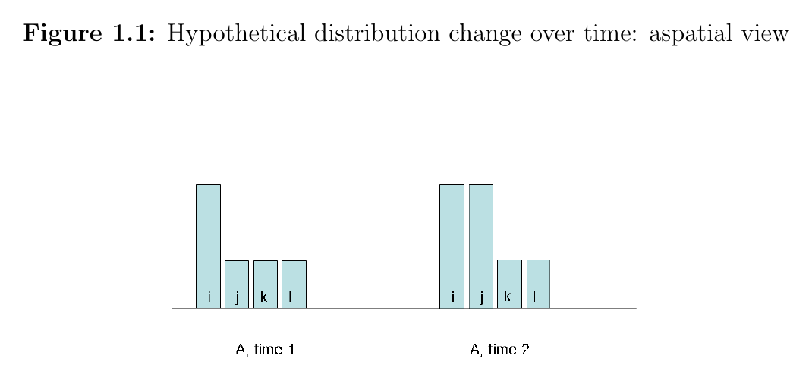
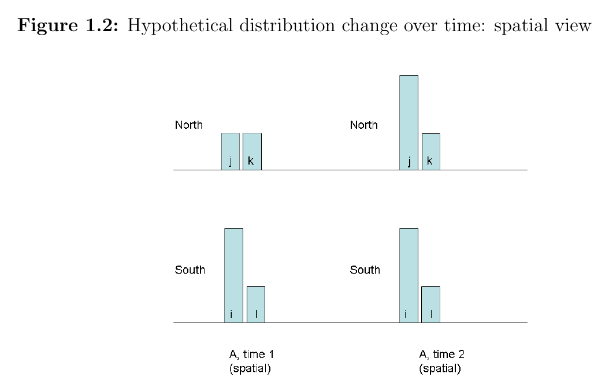

Inequality with a Spatial View
A note drawn from my 2014 dissertation, Assessing Inequality using Geographic Income Distributions (UC Santa Barbara / SDSU). I'm including it here because the dissertation's "spatial view" is, in modern terms, a graph representation. The same move — keep the relational structure, don't flatten it — recurs in the knowledge-engineering work on the rest of this site.
Same numbers, two opposite verdicts
Standard inequality metrics — variance, the Gini coefficient — implicitly weight every pair of places the same. That hidden assumption can flip the answer.

Aspatial view. Four places (i, j, k, l). At time 1, one is rich, three are poor. At time 2, two are rich, two are poor. Most readers would say inequality went down: the gap is smaller, more people are near the top.
Now look at the same change with the geographic labels restored:

Spatial view. Same incomes — but now we can see where the rich and the poor are.
- In the North, j and k were both poor at time 1. By time 2, j has become rich; k stayed poor. A new rich-poor gap opened up inside the region.
- In the South, i (rich) and l (poor) are unchanged.
Now the change reads as inequality going up. The poor in the North (k) now share a neighborhood with rising incomes (j), and they compete with their newly-rich neighbors for the same local resources — good teachers, decent housing, services — at higher prices.
"...aspatial metrics, those not incorporating a spatial view, would quantify both inequality situations in the diagrams as identical." — dissertation, §1.2
Same data, two opposite verdicts. Which one is right depends on the question: "is the country becoming more equal overall?" (1.1 is better) versus "are poor people in this region being pushed out by their neighbors?" (1.2 is worse).
What "spatial view" means
A spatial view is a weighting scheme that says some income differentials between pairs of places matter more than others. Different concerns call for different spatial views.
Formally, the dissertation captures this with a spatial weights matrix W, where each entry is:
Place i is connected to place j if knowing j's outcome changes our belief about i's. Both cooperative dependence (a city's growth lifting a contiguous rural economy) and competitive dependence (neighborhoods competing for local resources) qualify.
A spatial view is a graph. W is an adjacency matrix; each place is a node; each edge encodes a weighted, heterogeneous connection between places. That's the same structure as a knowledge graph — nodes plus weighted, typed edges.
Both also do the same trick: they let you compute summary global statistics from local knowledge. A graph metric (centrality, community detection, a spatially-weighted Gini) is just a global aggregation over local edges. The local edges carry which-pair-matters information that a flat list of values throws away; the aggregation rolls that local information up into a single number without erasing it.
Two directions of concern: unfairness vs. suffering
Section 1.7 of the dissertation splits inequality concerns by direction of causality:
Unfairness as a cause. Income differentials as evidence about institutions. From Rawls (A Theory of Justice, 1999, p.78): "Eventually the resulting material benefits spread throughout the system to the least advantaged." If that doesn't happen — if dispersion grows or persists — the basic structure may be regulating shares of primary goods unjustly (Rawls and Kelly, 2001). The relevant graph here connects places that share a political system.
Suffering as an effect. Income differentials as a cause of capability deprivation. Sen extends Adam Smith's Smithian interdependencies: appearing in public without shame depends on what your neighbors wear. Relative deprivation matters because it is instrumental — it deprives people of absolute capabilities (health care, schooling, social participation). The relevant graph here connects places close enough to compete for local resources, or share schools, or otherwise interact daily.
The same change can register opposite verdicts under these two views. Suppose richer households move adjacent to poorer ones:
- Irrelevant under unfairness — it's an endogenous, voluntary change, not an institutional act.
- Better under the social-encounter view — more cross-class contact.
- Worse under the resource-competition view — intensified local competition.
This is the dissertation's central paradox, stated in the abstract:
"...spatial inequality metrics formulated for different concerns can register the same change in opposite directions."
The spatial view is hidden inside the formula
The dissertation's conclusion makes the methodological point that has stayed with me:
"Formulas for computing inequality statistics are not transparent in how they make implicit spatial generalizations... evaluation of this spatial presumption cannot be done in a manner that is as objective as it may appear to be by the equations within which they are embedded." — dissertation, ch. 5
Every aggregate metric implicitly weights pairs of places — and "weight them all equally" is itself a strong assumption, not a neutral default. When the spatial view is hidden inside the formula, the assumption stops being visible. Writing W down explicitly makes it available for argument.
Full dissertation: Assessing Inequality using Geographic Income Distributions, UC Santa Barbara and San Diego State University, 2014. Committee: Sergio Rey (chair), Arthur Getis, Stuart Sweeney, David Carr.